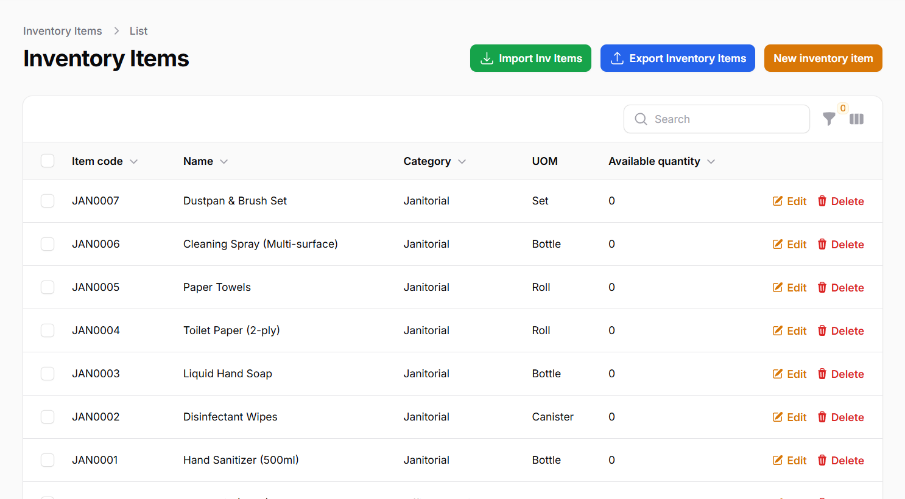
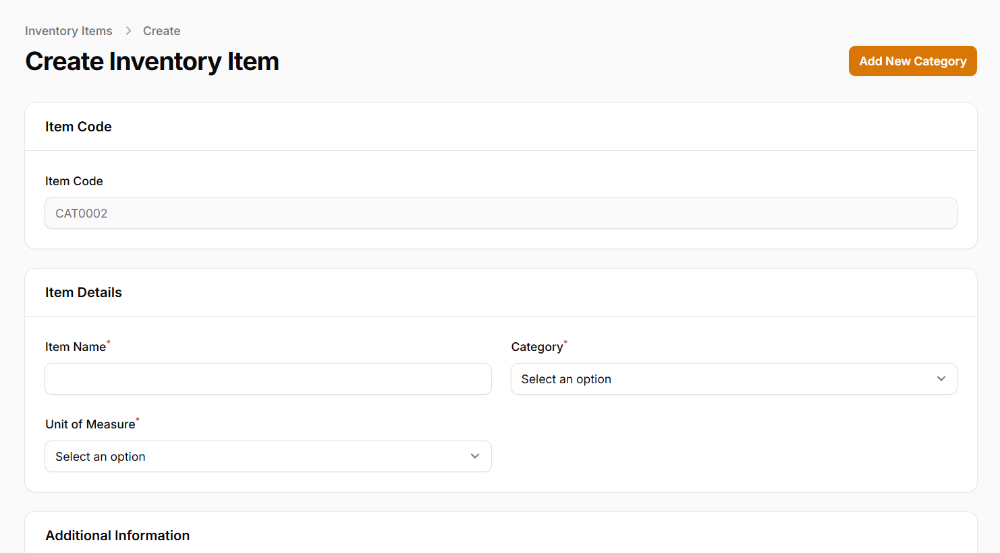
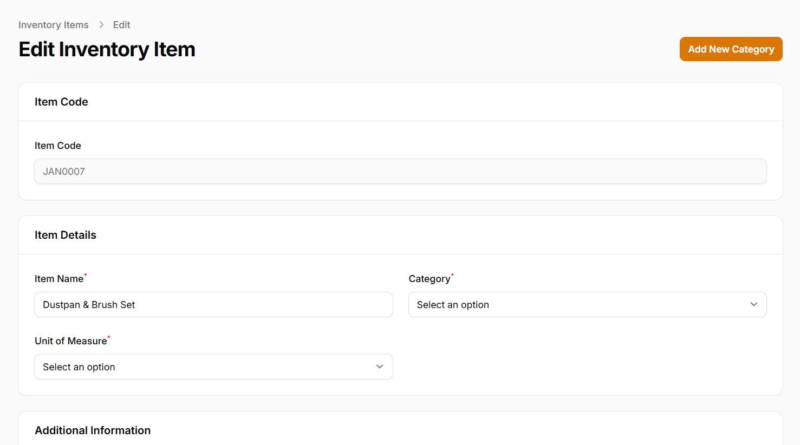
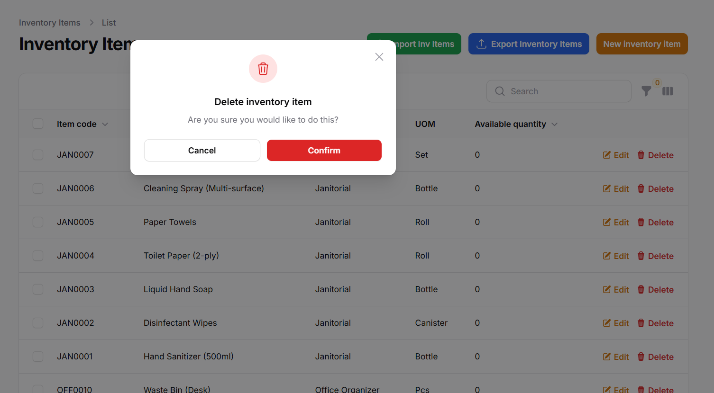
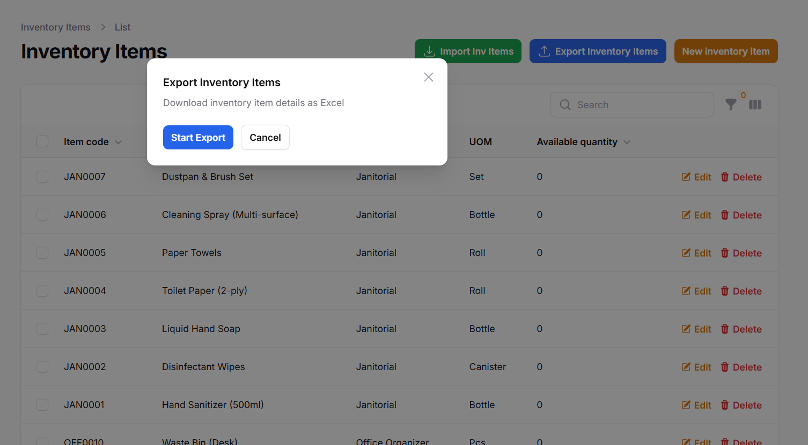
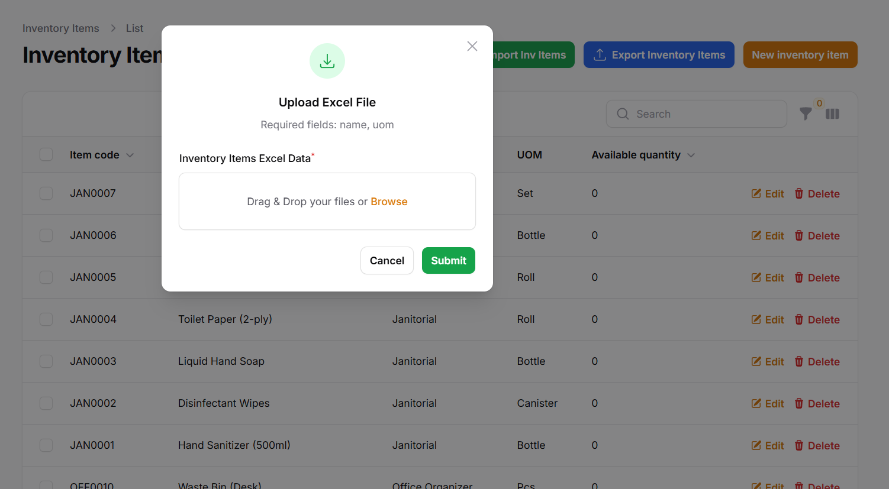
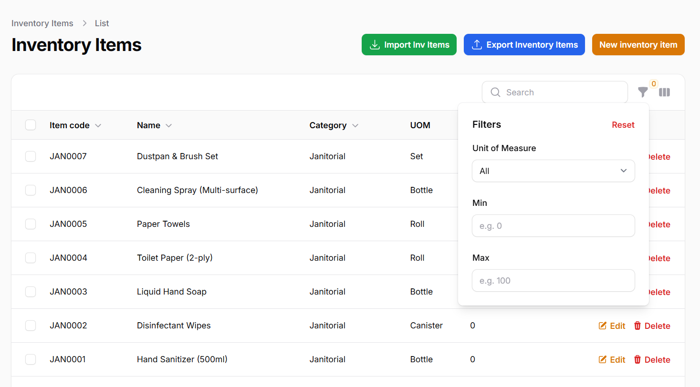

Inventory Item Module
Overview
The Inventory Item module manages all products and materials in your inventory system with comprehensive CRUD operations and bulk data handling capabilities.
Key Features
- Automatic item code generation based on category
- Flexible category management system
- Multiple unit of measure options (kg, liters, pcs, etc.)
- Real-time quantity tracking with alert thresholds
- Role-based access control for all operations
- Bulk import/export functionality
- Advanced filtering and searching
Viewing Inventory Items
To browse and search through your inventory items:
- Navigate to Inventory > Items from the sidebar
- The system displays all items in a paginated, sortable table
- Columns include:
- Item Code - Unique identifier
- Name - Product description
- Category - Classification group
- UOM - Unit of measure
- Available Quantity - Current stock level
- Use the search bar to find items by name, code, or category
- Click column headers to sort items (click again to reverse order)
Pro Tip: Combine search with filters (see Item Filters section) for powerful inventory analysis.

Creating an Inventory Item
To add a new item to your inventory:
- Click Create Item from the items list page
- Complete the form sections:
Item Code (Auto-generated)
- System creates code based on category and sequence
- Format: [CAT]-[0001] (e.g., "ELEC-0042")
Item Details (Required)
- Item Name - Descriptive product name (e.g., "Stainless Steel Bolt")
- Category - Select from dropdown or add new
- Unit of Measure - Choose appropriate unit
Inventory Controls (Optional)
- Alert Quantity (MOQ) - Minimum threshold for restocking alerts
- Max Order Quantity - Prevent over-ordering
- Notes - Special handling instructions
- Click Save to create the item
Note: New categories can be added directly from the category dropdown by typing and pressing Enter.
Important: The initial available quantity is set to 0. Use inventory adjustments or receipts to add stock.

Editing an Inventory Item
To modify existing item details:
- Locate the item in the list view
- Click the Edit button (pencil icon)
- Update any editable fields:
- Name - Can be changed at any time
- Category - Changing will regenerate item code
- UOM - Only change if no transactions exist
- Inventory Controls - Adjust thresholds as needed
- Click Save to update the item
Data Integrity: Changing UOM after transactions exist may cause reporting inconsistencies. The system will warn you if this change is risky.

Deleting an Inventory Item
To remove an item from your inventory:
- Locate the item in the list view
- Click the Delete button (trash icon)
- Confirm deletion in the dialog box
Safety Check: The system prevents deletion if:

- Available quantity is not zero
- Item has associated transaction history
- Item is referenced in pending orders
Exporting Inventory Items
To export your item data for analysis or backup:
- From the items list view, click Export
- Select export format:
- Excel (.xlsx) - Recommended for most uses
- CSV - For simple data exchange
- PDF - For printable reports
- Choose columns to include (default: all visible columns)
- Apply any active filters to export filtered subsets
- Click Export to download the file
Template: Exported Excel files can serve as templates for imports - just add new rows with your data.

Importing Inventory Items
To bulk import items from a spreadsheet:
- Prepare your data file:
- Use the exported template or follow the format
- Required columns:
name,category,uom - Optional columns:
moq,max_order_quantity,special_note
- From the items list, click Import
- Upload your prepared file
- Select import mode:
- Create New Only - Skip existing items
- Update Existing - Modify matched items
- Full Sync - Create new and update existing
- Map spreadsheet columns to database fields
- Review the preview and click Import
Validation: The system will:

- Skip rows with missing required fields
- Flag duplicate items based on name/category
- Validate UOM values against allowed options
Advanced Item Filters
Powerful filtering options help you analyze inventory:
Basic Filters
- Category - Filter by one or multiple categories
- UOM - Show only specific unit types
- Status - Active/Inactive items
Quantity Filters
- Stock Level:
- Below MOQ (needs reorder)
- Above maximum
- Custom range
- Zero Stock - Items with no inventory
Advanced Options
- Created Date - Filter by creation time range
- Modified Date - Find recently changed items
- Created By - Filter by user who added item
Save Filters: Frequently used filter combinations can be saved as presets for quick access.

Was this documentation helpful?